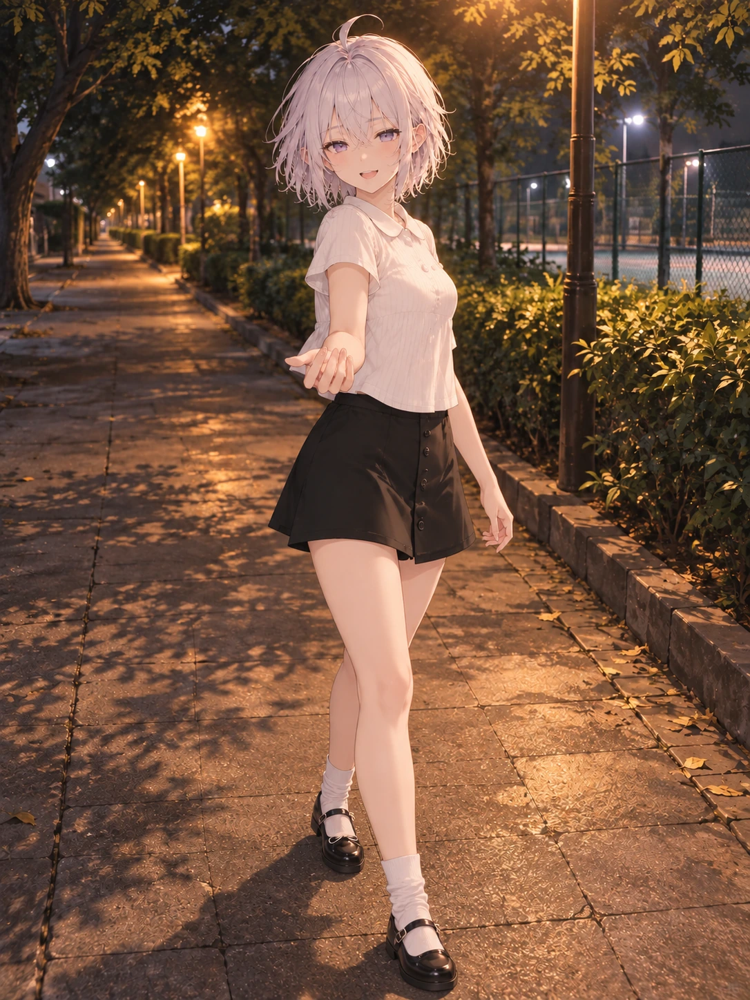

用户认可精选 / 逐页阅读
N05 · 海口夜路再走一段
用户确认可用

检查与反馈记录
- 修正版眼线连线基本水平，头颈连接比首稿稳定；脸部保留轻松的笑意，没有把短发身份或淡紫眼改掉。
- 白色翻领短袖、黑色A字短裙、白短袜和黑色玛丽珍鞋与参考相符，鞋尖和鞋底完整。
- 全身可辨两臂两手、两腿两脚；膝踝过渡连续、腿间可读，无额外肢体。
- 烟熏全包眼线可见但未盖住虹膜；外出态未出现角尾。夜路灯光与步道透视连贯。
- 修正版作为待用户审阅候选；当前已达到一次修整上限，不追加生成。
- 用户确认本组三张可用；用户补充自然且符合人体体态的轻微歪头可以接受。